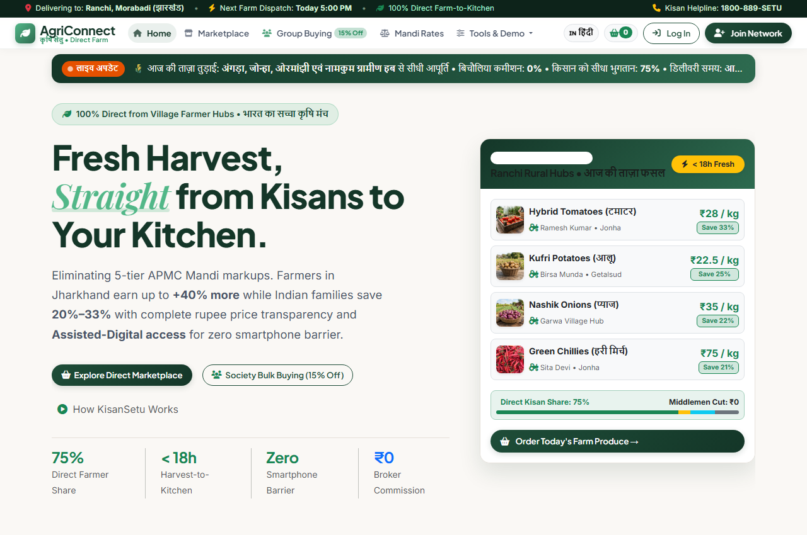
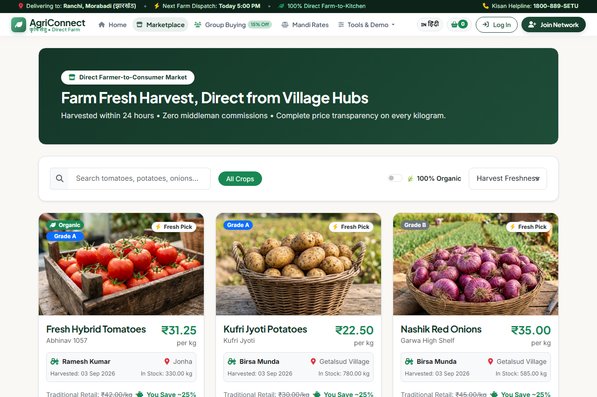
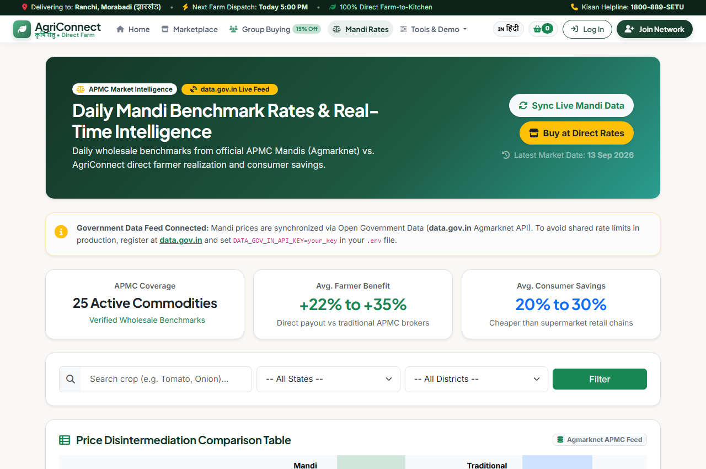
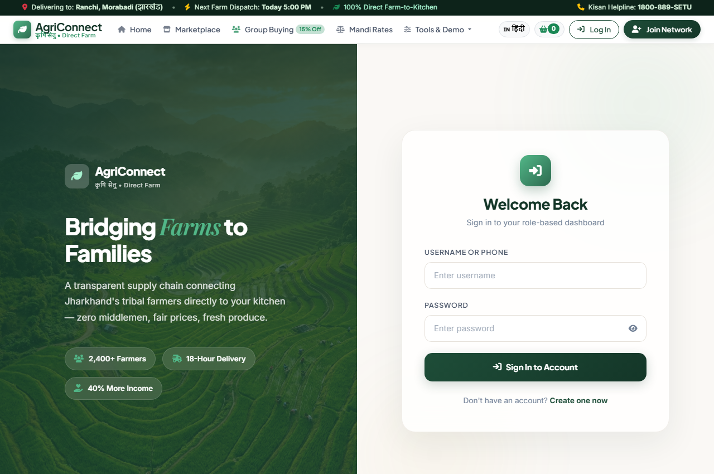

A Digital Platform Connecting Agriculture, Farmers and Opportunities
Eliminating exploitative middlemen with assisted-digital rural kiosks, verified market intelligence & direct buyer pools.
A modern web-based agricultural platform bringing vital services, market data, and stakeholders together.
Modernizes traditional agrarian workflows through automated digital listings, real-time demand calculation, and electronic order tracking.
Bridges rural smallholder farmers with urban residential societies, bulk buyers, and local transporters without middleman interference.
Consolidates harvesting batch logs, logistics batch dispatching, digital Kisan credit passbooks, and AI Crop Doctor disease advisories.
Provides daily APMC Mandi wholesale rates from official Government APIs (data.gov.in) with transparent rupee margin breakdown cards.
Empowering rural producers with fair price realization through an assisted-digital "phygital" architecture, ensuring no farmer is excluded due to device or literacy barriers.
The critical supply chain and technological bottlenecks plaguing traditional agricultural distribution.
Farmers lack accessible benchmark market prices and are forced to rely on local brokers who exploit price ignorance.
4 to 5 intermediary layers (village trader → arhatiya → commission agent → retailer) siphon 70% of consumer spend.
Smallholder farmers lack smartphones, high-speed mobile data, or complex digital skills needed for conventional e-commerce apps.
Uncoordinated individual transit trips cause dry runs, high freight overheads, and 20%+ transit spoilage.
The key engineering and social goals AgriConnect was developed to accomplish.
Unify 5 core stakeholders (Farmers, Village Facilitators, Buyers, Transporters, Admin) on a single collaborative portal.
Aggregate produce catalogs, official APMC mandi rates, batch harvesting records, and delivery manifests in a single database.
Provide direct-to-consumer catalogs with society group buying pools to unlock 15% bulk discounts and fresh harvest batches.
Enable assisted access through Village Digital Facilitators (VDF) and feature-phone IVR/SMS prompts for illiterate farmers.
Automate order verification via OTPs, automated route dispatching, and dynamic supply chain rupee decomposition.
Architect a cloud-ready Django/PostgreSQL foundation capable of horizontal scaling across regional agrarian districts.
Transforming the agricultural supply chain from fragmented middleman exploitation to digital transparency.
| Dimension | Traditional Problem | AgriConnect Proposed Solution |
|---|---|---|
| Farmer Realization | 25% – 30% Only | 75.0% Guaranteed Direct Farmgate Payout |
| Digital Access | Complex English mobile-only apps | Assisted Phygital Kiosk (VDF) + Feature Phone Voice IVR |
| Pricing Truth | Opaque broker margins & secret cuts | Decomposed Rupee Breakdown Card on every kilogram |
| Delivery & Spoilage | 72–96 hours delay • 20%+ shrinkage | < 24h Farm-to-Fork via batch aggregator manifests |
Verified, fully functional modules implemented and tested in the codebase.
CustomUser model with tailored dashboards for Farmer, Facilitator, Consumer, Transporter, and Administrator.
Clean produce catalog with organic filters, instant keyword search, and itemized rupee decomposition cards.
Assisted kiosk portal allowing trusted rural agents to onboard offline farmers, list harvests, and disburse cash.
Enables non-smartphone farmers to dial automated voice prompts (DTMF) and receive live SMS dispatch alerts.
Live integration with Government Agmarknet API (data.gov.in) displaying daily modal, min, and max benchmark prices.
Consolidated batch manifests for drivers, route waypoint tracking via Leaflet.js, and two-party OTP verification.
Production-grade technologies powering AgriConnect's frontend, backend, and deployment.
Multi-tier model-view-template (MVT) design ensuring scalability, security, and loose coupling.
Actual high-resolution screens captured from the live deployed platform.




The practical user journey from farm harvest listing to verified door delivery and escrow payout.
Farmer visits Village Kiosk (or dials IVR). The Facilitator (VDF) logs produce grade, quantity (kg), and base price.
System checks live Mandi rate, computes fair consumer price with transparent 75% farmer share, and lists batch online.
Consumers place direct or group pool orders. Transporters claim village batch manifests and track route checkpoints via Leaflet.
Consumer provides delivery OTP upon quality check. Escrow releases direct payout and updates Kisan Digital Passbook.
If produce quality diverges from the listing grade, buyers file disputes with photo evidence. Mediators review escrow holds via the administrative arbitration desk.
Clear evolutionary path separating our existing web platform from upcoming enterprise capabilities.
Successfully unifies rural producers, assisted kiosks, and urban consumers into an integrated direct ecosystem.
Elevates farmer realization from 28% to 75% while saving urban consumers 20% to 25% with zero broker markups.
Overcomes the smartphone barrier via Village Digital Facilitators and automated voice IVR/SMS phone simulators.
Provides a reliable architectural foundation ready for AI vision diagnostics, weather APIs, and institutional credit scoring.
Questions & Answers